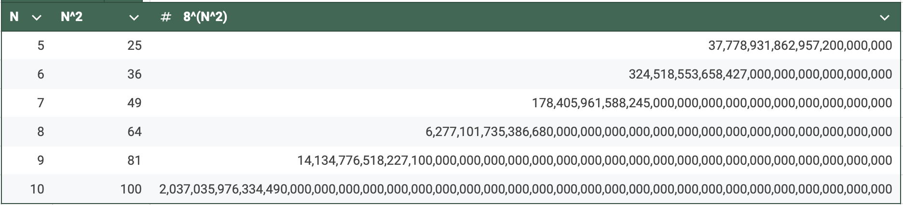
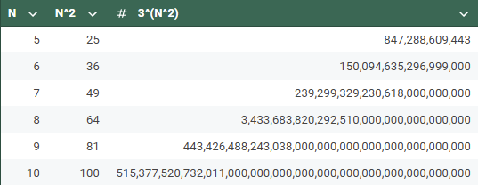

Recorrido del Caballo de Ajedrez

Materia: Programación 3
Integrantes:
Descripción
Dado un tablero de ajedrez de tamaño N×N y una posición inicial para el caballo, el objetivo es encontrar un camino en el que el caballo visite cada casilla exactamente una vez. El caballo se mueve en forma de "L", es decir, dos casillas en una dirección (vertical u horizontal) y luego una casilla en una dirección perpendicular, o una casilla en una dirección y dos casillas en la perpendicular.
Total de 8 movimientos posibles a evaluar

Implementación
Backtracking
Pseudocódigo
Costo Backtracking
Exponencial
La complejidad temporal de este problema utilizando Backtracking normalmente
se analiza como (8^N^2), donde:
se analiza como (8^N^2), donde:
- N es el tamaño del tablero de ajedrez. Un tablero de ajedrez N x N tiene N^2 casillas.
- Movimientos máximos por casilla: en cada casilla, el caballero puede realizar como máximo 8 movimientos posibles.

Branch & Bound
Para el problema propuesto, se implementó para Branch la heurística de priorización a la cercanía a los bordes del tablero. Y para Bound, al evaluar los 8 movimientos posibles del caballo, si tengo en mi cola de prioridad más de 4 movimientos, cortarla a la mitad. Si una ruta falla, se utiliza Bactracking para probar las otras ramas posibles hasta encontrar un recorrido completo o declarar que no existe solución.Implementación
Branch & Bound
Pseudocódigo
Costo Branch & Bound
-
En el peor caso, la complejidad temporal es 𝑂(2^(𝑁^2)), donde 𝑁^2 es el número de casillas del tablero y 2 es el máximo número de movimientos posibles del caballo dado a la poda realizada.

Comparaciones y Metricas
Algoritmo Backtracking
def solveKT(n, pos_x, pos_y):
# Inicialización Matriz
board = [[-1 for _ in range(n)] for _ in range(n)]
# Movimientos posibles
move_x = [2, 1, -1, -2, -2, -1, 1, 2]
move_y = [1, 2, 2, 1, -1, -2, -2, -1]
# Posicion Inicial
board[x_position][y_position] = 0
# Contador
pos = 1
# Pregunto si es Solucion
if not solveKTUtil(n, board , x_position, y_position, move_x , move_y , pos):
print("Solution does not exist")
else:
printSolution(n, board )
def solveKTUtil(n, board , curr_x, curr_y, move_x, move_y, pos):
if pos == n**2:
return True
for i in range(8):
# Movimiento posible en X e Y
new_x = curr_x + move_x[i]
new_y = curr_y + move_y[i]
#Pregunto si es válido
if isSafe(new_x, new_y, board, n):
board[new_x][new_y] = pos
#Recursividad con nueva posicion
if solveKTUtil(n, board, new_x, new_y, move_x, move_y, pos + 1):
return True
#Si no es válido, vuelvo a marcar -1
board[new_x][new_y] = -1
#Si no hay solución, retorno False
return False
def isSafe(x, y, board, size):
#X e Y se encuentran dentro de los limites
#Esta casilla no fue visitada
return 0 <= x < size and 0 <= y < size and board[x][y] == -1
Algoritmo Branch & Bound
def solveKT(n):
start_time = time.time()
board = [[-1 for i in range(n)]for i in range(n)]
move_x = [2, 1, -1, -2, -2, -1, 1, 2]
move_y = [1, 2, 2, 1, -1, -2, -2, -1]
board[x_position][y_position] = 0
pos = 1
if(not solveKTUtil(n, board, x_position, y_position, move_x, move_y, pos, bkalg)):
print("Solution does not exist")
else:
print(f"--- {time.time() - start_time} seconds ---")
printSolution(n, board)
def solveKTUtil(n, board, curr_x, curr_y, move_x, move_y, pos):
if(pos == n**2):
return True
cola_prioridad = branch(curr_x, curr_y, n, board, move_x, move_y)
for _, new_x, new_y in cola_prioridad:
board[new_x][new_y] = pos
if(solveKTUtil(n, board, new_x, new_y, move_x, move_y, pos+1, bkalg)):
return True
board[new_x][new_y] = -1
return False
def branch(curr_x, curr_y, n, board, move_x, move_y):
priority_queue = []
for i in range(8):
new_x = curr_x + move_x[i]
new_y = curr_y + move_y[i]
if isSafe(new_x, new_y, board, size=len(board)):
# Guarda los movimientos con sus distancias mas cercanas del centro
distance = distanciaHaciaBordes(new_x, new_y, n)
priority_queue.append((distance, new_x, new_y))
# Ordena los movimientos priorizando los mas cercanos a los bordes
priority_queue.sort(reverse=True, key=lambda move: move[0])
return bound(priority_queue)
def distanciaHaciaBordes(x, y, n):
center = (n - 1) / 2
dx = x - center
dy = y - center
distance = (dx * dx + dy * dy) ** 0.5
return distance
def bound(moves):
if len(moves)>=4:
moves=moves[:1]
return moves
def isSafe(x, y, board):
if 0 <= x < len(board) and 0 <= y < len(board) and board[x][y] == -1:
return True
return False
def printSolution(n, board):
for i in range(n):
for j in range(n):
print(board[i][j], end=' ')
print()